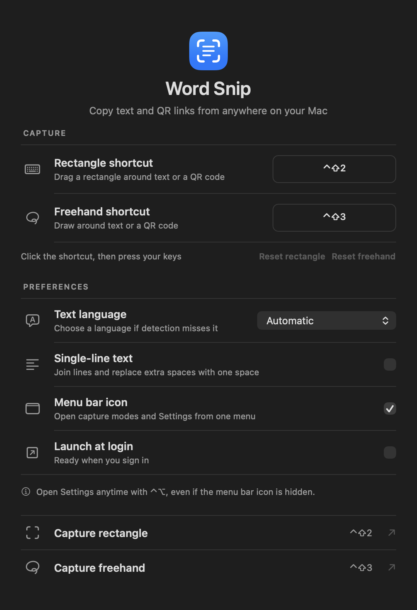

Draw a rectangle
Drag a box around a paragraph, a slide title, or a line from an image. Release to copy the text.
Grab a line from a lecture slide, a quote from an image, or a link from a QR code. Draw around it to copy, or use the translation shortcut to read it in another language.
Free and open source macOS 14 or later. Translation requires macOS 15.
Lecture notes
Inyun (also romanized as inyeon or in-yun, Korean: 인연 / 因緣) is a Korean concept of fate, providence, or karmic connection, especially in relationships between people.
Draw around any part of the text to copy it.
Clipboard preview
Inyun (also romanized as inyeon or in-yun, Korean: 인연 / 因緣) is a Korean concept of fate, providence, or karmic connection, especially in relationships between people.
Word Snip detects the language as you capture. For a short or ambiguous selection, pick its language in Settings → Text language and try the capture again.
Available languages depend on your version of macOS. They can include Chinese, Japanese, Korean, Thai, Russian, and Ukrainian.

Version 1.9.2 for Apple silicon and Intel Macs running macOS 14 or later. Translation overlays require macOS 15 or later.
In Settings, turn on Collapse extra spaces to replace repeated spaces while keeping line breaks.